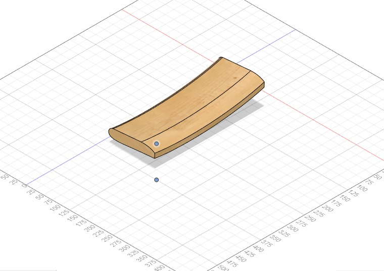
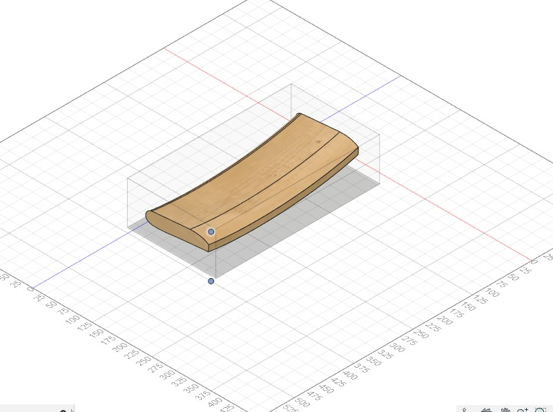
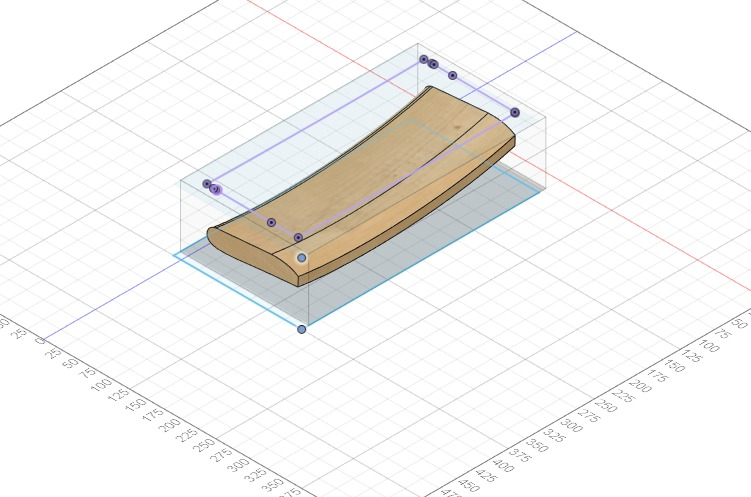
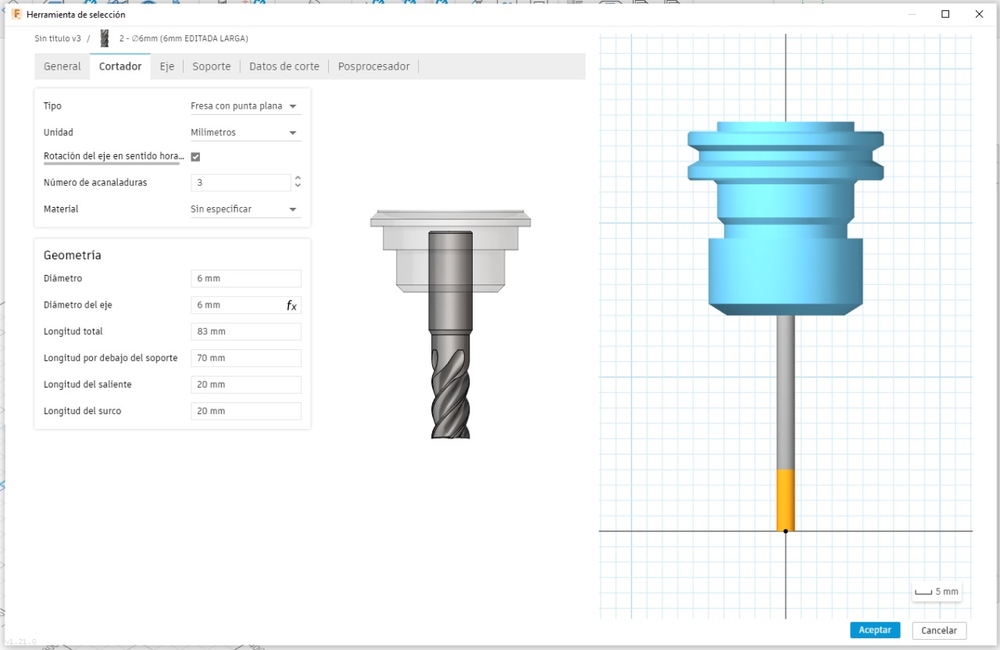
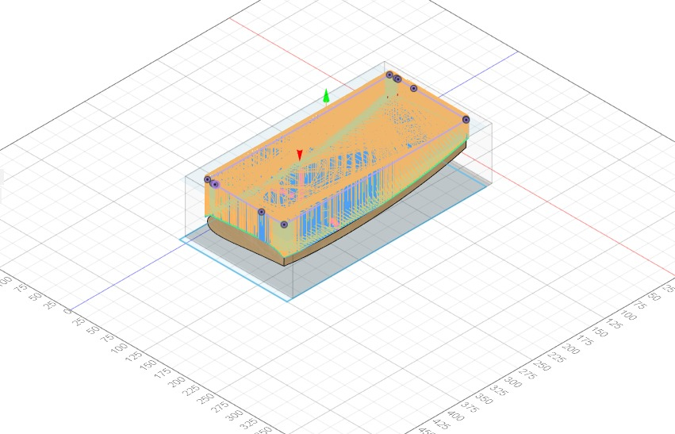
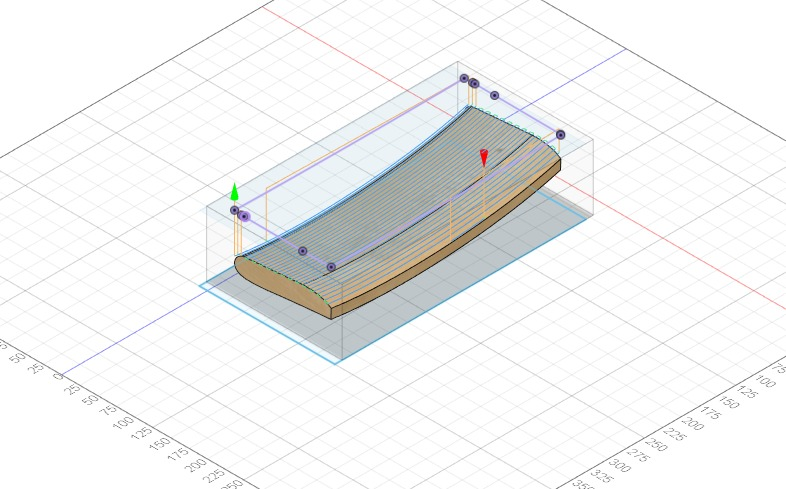
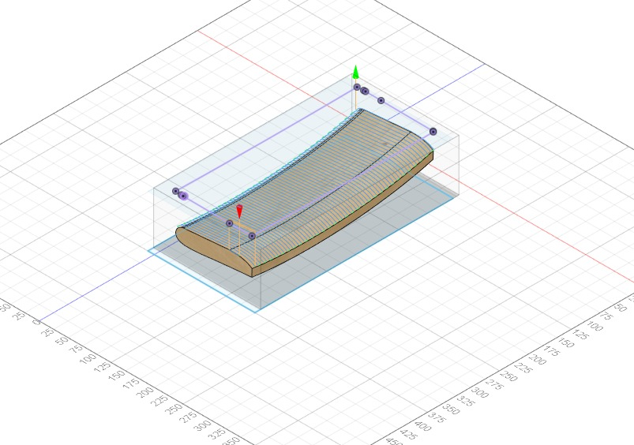

E03 - Mecanizado CNC 2,5
¿Como funciona un mecanizado CNC 2,5?
Las operaciones de mecanizado en 2,5 ejes son un conjunto de procedimientos que se pueden aplicar en centros de mecanizado 2,5 ejes y 3 ejes (comúnmente conocidas como fresadoras), para fabricar piezas de distintos materiales, moviendo la herramienta en las coordenadas X e Y a la vez durante el corte de material o arranque de viruta.
En un mecanizado por corte de 2,5 ejes, la herramienta se puede llegar a mover en un máximo de 3 ejes de la máquina (XYZ), pero nunca se moverá en las tres coordenadas a la vez durante la trayectoria de corte.
Las estrategias de corte de 2,5 ejes se emplean fundamentalmente cuando la geometría es sencilla y para desbastar grandes cantidades de material de forma uniforme. También se usan para acabados de paredes en 2.5 ejes cuando no se necesita un acabado superficial muy fino.
Pasos para un mecanizado CNC con estrategia de corte 2.5
1. Exportar el Respaldo:
Abrir el archivo del respaldo de la silla Fresia en Fusion 360, seleccionar el respaldo de esta y exportarlo como un archivo nuevo.

2. Orientar la pieza:
Mover y rotar el respaldo hacia el origen, usar el comando align para asegurarse de que la pieza quede ubicada en posición ortogonal con respecto a los ejes de fusión.

3. Crear Stock de trabajo
Mediante un “sketch” de forma rectangular creamos una base que inscrito en el respaldo, con el comando extrude, darle la altura necesaria [nuevamente mayor que el respaldo]. Luego, bajar la opacidad para poder visualizar de mejor manera lo que se está haciendo.

4. Límite del Mecanizado
En un nuevo “Sketch” seleccionamos la cara superior del rectangulo como plano y proyectamos el contorno del respaldo para generar un límite y que la máquina no esté cortando innecesariamente.

5. Setup de Mecanizado
En el modo de Diseño a Manufactura. Se debe seleccionar la máquina “Generic 3 Axis” y la fresadora de 6mm. Se debe editar la longitud debajo del soporte de la fresadora; vez de 22.5 mm de largo la dejaremos en 70 mm. Con una orientación de Z con el eje X.

6. Adaptive Clearing
Este proceso de desbaste es proceso la primera trayectoria que ejecutaremos. La cual sirve para remover material sobrante de la pieza y así poder acelerar el proceso. COn una terminacion mas rudimentaria.

7. Terminación Paralela 1
Luego se hace “Terminación paralela”, pero con una Fresa “Ball End Mill”

8. Terminación Paralela 2
Finalmente se duplica la terminación paralela, se selecciona editar, para después, rotar la “Pass Direction” de 0 a 90 deg y bajar su “Stepover” de 3 mm a 2 mm.
Videos de Simulación
Imagenes reales